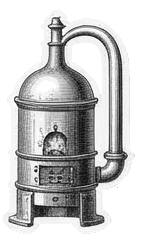

07 / 09 · Connect the circles
Nancy’s build
One of my builds, read through the three circles.
- i · What it lets someone do
- Placeholder
- ii · The first, imperfect version
- Placeholder
- iii · One judgment call
- Placeholder
- iv · One change prompted by real behavior
- Placeholder
Fallback: this site, and the change from the dry run

AI can draw any of these circles. It can’t choose the belief that runs through them.
Plate 07 · first version, then a real change